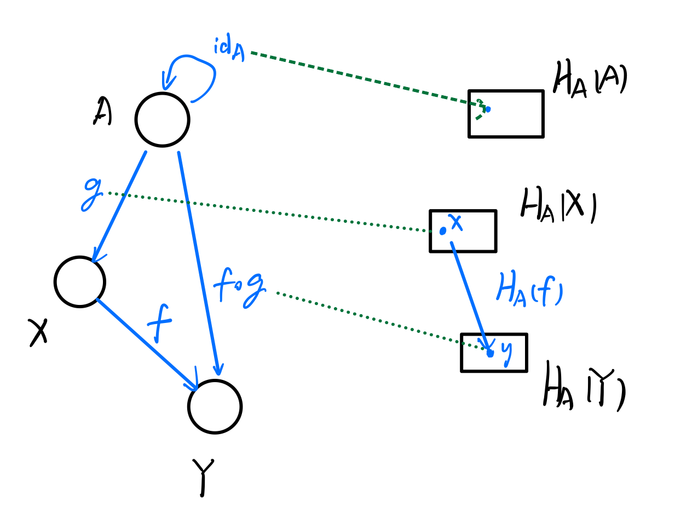
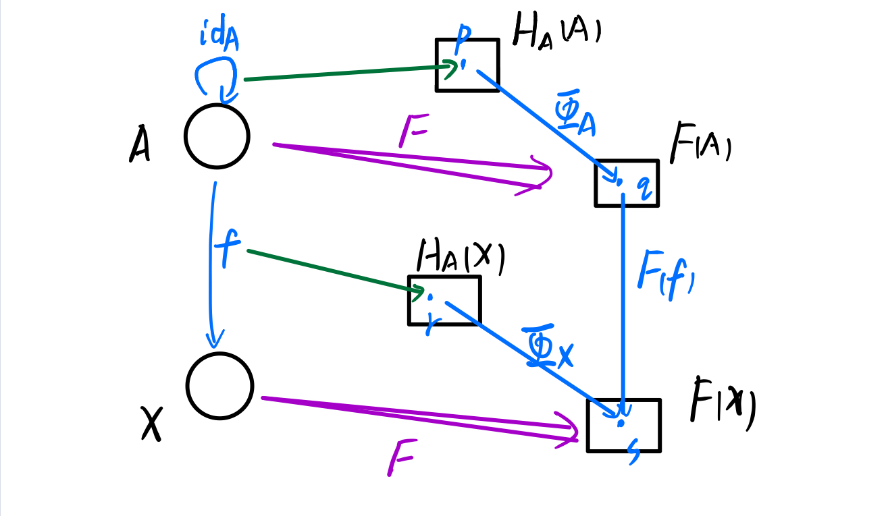

Category Theory
本文介绍基本的范畴论概念，包括范畴、态射、函子、自然变换、Yoneda Lemma。
参考资料:
Category
一个范畴 \(C\) 包含下面三个实体：
a class \(\text{ob}(C)\), whose elements are called objects;
a class \(\text{Hom}(C)\), whose elements are called morphisms or maps or arrows.
- \(f:a\rightarrow b\) 是一个从 \(a\) 到 \(b\) 的态射；
- \(\text{Hom}(a,b)\) 是含有所有从 \(a\) 到 \(b\) 的态射的class；
a binary operation \(\circ\) , called composition of morphisms.
\(\circ : \text{Hom}(b,c) \times \text{Hom}(a,b) \rightarrow \text{Hom}(a,c)\)
两个态射 \(f:a\rightarrow b\) 和 \(g : b \rightarrow c\) 的组合记作 \(g \circ f : a \rightarrow c\)
态射的组合 \(\circ\) 需要满足下面两个公理：
- 结合性：\(\forall f:a \rightarrow b, g: b \rightarrow c, h: c \rightarrow d\)，都有 \(h \circ(g \circ f) = (h \circ g) \circ f\)
- 单位性：\(\forall x\in \text{ob}(C), \exists \text{id}_x : x \rightarrow x\)，满足 \(\forall f: a\rightarrow b, \text{id}_b \circ f = f = f \circ \text{id}_a\)
注：这里使用的概念是class，并不是集合set，详情见wiki。
简单来说，class是set-like collections，并且不会产生“罗素悖论”。class的具体含义取决于基础语境，在ZFC中，class的概念是非正式的。是set（ZFC定义的set）的class被称作small class，不是set的class被称作proper class。
范畴论是更一般的理论，关键在于这里的object和morphism没有具体所指。下面举例：
- Set范畴：object是set，morphism \(f\) 是set到set的映射，比如幂集、函数。这也是最重要的范畴。
- Hask范畴：object是type，morphism \(f: a\rightarrow b\) 是类型 \(a\) 到类型 \(b\) 的函数。理论上Haskell使用的Hask范畴是一个范畴。
Morphism
态射是函数更一般化的概念，在Hask范畴里就是函数，所以可以类比函数来理解。
下面是类比函数对态射提出相似的性质，一个态射 \(f:a\rightarrow b\) 被称作：
monomorphism 单态： \(\forall g_1, g_2 \in \text{Hom}(x,a)\) ，都有 \(f\circ g_1 = f \circ g_2 \Longrightarrow g_1 = g_2\)
类比单射函数，如下图
graph LR subgraph a A[a] subgraph contents of a a1((a1)) a2((a2)) end end subgraph b B[b] subgraph contents of b b1((b1)) b2((b2)) b3((b3)) end end a1 -.-> b1 a2 -.-> b3 A ==>|f| Bepimorphism 满态：\(\forall g_1,g_2\in \text{Hom}(b,x)\)，都有 \(g_1 \circ f = g_2 \circ f \Longrightarrow g_1=g_2\)
graph LR subgraph a A[a] subgraph contents of a a1((a1)) a2((a2)) a3((a3)) end end subgraph b B[b] subgraph contents of b b1((b1)) b2((b2)) end end a1 -.-> b1 a2 -.-> b2 a3 -.->b2 A ==>|f| Bbimorphism ：既是单态，又是满态。类比 双射（一一映射）。
isomorphism 同构：\(\exists g:b\rightarrow a\) 满足 \(f\circ g = \text{id}_b\) 和 \(g\circ f = \text{id}_a\) 。类比可逆映射。
endomorphism 自同态：\(a=b\)，表示 \(a\rightarrow a\) 的态射。
automorphism 自同构：同构 且 自同态。
retraction：存在右逆 \(g:b\rightarrow a\) 满足 \(f \circ g = \text{id}_b\) 。
section：存在左逆 \(g:b\rightarrow a\) 满足 \(g\circ f = \text{id}_a\) 。
下面三句话等价：
- \(f\) 是 单态 且存在 右逆
- \(f\) 是 满态 且存在 左逆
- \(f\) 是一个 同构
Proof:
\(\because \exists g: B \rightarrow A\) s.t. \(f \circ g = \text{id}_B\)
\(\therefore (f \circ g) \circ f = \text{id}_B \circ f\)
\(\therefore f \circ (g \circ f)= f = f \circ \text{id}_A\)
\(\because \forall g_1, g_2\) if \(f \circ g_1 = f \circ g_2\) then \(g_1 = g2\)
\(\therefore g\circ f = \text{id}_A\)
\(\because \exists g: B\rightarrow A\) s.t. \(g\circ f= \text{id}_A\)
\(\therefore f \circ (g \circ f) = f\circ \text{id}_A\)
\(\therefore (f\circ g)\circ f = f = \text{id}_B \circ f\)
\(\because \forall g_1,g_2\), if \(g_1\circ f = g_2 \circ f\), then \(g_1=g_2\)
\(\therefore f\circ g = \text{id}_B\)
\(\because \exists g: B\rightarrow A\) s.t. \(f\circ g = \text{id}_B\) and \(g\circ f = \text{id}_A\)
\(\therefore \forall g_1, g_2\)
If \(f\circ g_1 = f\circ g_2\)
then \(g\circ f \circ g_1 = g\circ f \circ g_2\)
therefore \(\text{id}_A \circ g_1 = \text{id}_A \circ g_2\), \(g_1 = g_2\)
Functor
Functor函子是范畴到范畴的映射，并且保持结构不变。考虑这么一个范畴，其对象是“小范畴”，函子就是这个范畴的态射。
一个（协变）函子 (covariant) functor \(F:C\rightarrow D\)，包括：
- 对于每一个对象 \(X \in \text{ob}(C)\)，都有一个 \(F(X) \in \text{ob}(D)\)
- 对于每一个态射 \(f:X\rightarrow Y \in \text{Hom}(C)\)，都有一个 \(F(f):F(X)\rightarrow F(Y) \in \text{Hom}(D)\)
并且保证下面两个性质：
- 对于每一个对象 \(X\in \text{ob}(C)\)， 都有 \(F(\text{id}_X) = \text{id}_{F(X)}\)
- 对于所有态射 \(f:X\rightarrow Y, g:Y\rightarrow Z\)，都有 \(F(g\circ f) = F(g)\circ F(f)\)
graph LR subgraph C X((X)) -.f.-> Y((Y)) end subgraph D fx[F X] -.F f.-> fy[F Y] end X --> fx Y --> fy
可以从定义看出，“结构不变”的含义，对象和态射都一一映射到新的范畴，并且态射的组合、单位性保持不变。
对应的，可以定义 逆变函子 contravariant functor \(F: C\rightarrow D\)，唯一的区别就是 \(C\) 的态射 \(f:X\rightarrow Y\) 映射到 \(D\) 里面 \(F(f):F(Y)\rightarrow F(X)\)，仅仅把态射的方向反转而已。换言之，逆变函子 \(F\) 是范畴 \(C^{op}\) 到范畴 \(D\) 的函子。
在Hask范畴中，Functor使用一个类型类Functor来描述：
1 | class Functor f where |
这个类型类Functor保证了object到object的映射，以及morphism到morphism的映射，不过Haskell并不会检查几条公理：
- \(F (\text{id}_X) = id_{F(X)}\)
- \(F(f\circ g) = F(f)\circ F(g)\)
需要程序员在实现的时候自己保证这两条公理的正确。
Yoneda Embedding
很容易发现，在范畴中，我们只知道object和object之间的态射，对于object内部的结构，我们一无所知。
但是对于Set范畴（这也是我们最熟悉的范畴），每个object是一个set，object之间的态射是集合到集合的映射，很容易想到的一个思路，能不能把那些我们不熟悉的范畴，转换成我们熟悉的Set范畴？
我们知道范畴到范畴的、保证结构不变的态射就是Functor，这个问题就是，对于什么样的范畴 \(C\)，存在一个Functor \(F\) ，使得 \(F(C)\) 是Set的一个子范畴。如果存在这样的表示，我们称这个范畴 \(C\) 是可表的，意思是有一个Set的表示。
Yoneda给出了问题的答案：对于任意 locally small 的范畴 \(C\)，都存在一个典型的函子 \(F\)，使得 \(F(C)\) 映射到集合和函数的范畴。
这个函子的构造是如此的自然：
首先从范畴 \(C\) 中任意挑选一个object \(A\)；
然后，要把任意object \(X\)，映射为集合 \(H(X)\)，这个集合是什么？
我们对于 \(C\) 一无所知，除了态射。所以 \(H(X) = \text{Hom}(A,X)\)。也就是说，我们把态射映射为集合中的元素。
最后，对于任意态射 \(f:X\rightarrow Y\)，映射为 \(H(f):H(X)\rightarrow H(Y)\)，怎么构造这个函数 \(H(f)\)？
描述一个函数 \(H(f)\)，我们只需要描述对于 \(H(X)\) 中的任意一个元素 \(x\)，它在 \(H(Y)\) 中的像 \(y\) 是什么。注意到 \(x,y\) 都是范畴 \(C\) 中的态射，所以很容易构造 \(H(f) (g) = f \circ g\) 。

注意：\(A\) 的选择是任意的，但是 \(H\) 的构造严重依赖于 \(A\)，所以这个函子记作 \(H_A\)。
证明 \(H_A\) 是函子的过程这里就略过，就是验证符合两条公理，关键就是枚举集合的元素。
locally small 是什么意思？
一个范畴是locally small，是说该范畴任意两个object之间的态射构成一个集合。
毕竟是一般性的基础理论，还是可能存在proper class这种情况的。比如“a collection of all sets”就不是一个set，但是这东西是Set范畴的基础。
Natural Transformation
Yoneda embbeding 中 \(A\) 的选择是任意的，那不同的选择之间的关系是什么，也就是说 \(H_A\) 和 \(H_B\) 有什么关系？
更一般的，对于任意一个从 \(C\) 到 Set 的函子 \(F\)，\(H_A\) 和 \(F\) 的关系是什么？
自然变换是两个函子之间的关系。
如果说函子描述了自然结构，那么自然变换就描述了这两种结构直接的自然同态。有时候两种不同的结构却返回相同的结果，可以使用这两个函子之间的自然同构来表示。
\(F, G :C\rightarrow D\) 是两个范畴之间的两个函子，从 \(F\) 到 \(G\) 的一个自然变换 \(\eta\) 是这样的一个映射：对于 \(C\) 中的每个对象 \(X\)， \(\eta_X:F(X)\rightarrow G(X)\) 表示一个 \(D\) 中的态射，满足对于每一个 \(C\) 中的态射 \(f:X\rightarrow Y\)，都有
\[\eta_Y\circ F(f) = G(f)\circ \eta_X\]
这表明下图是可交换的：
如果 \(\eta\) 还满足对于每一个 \(X \in \text{ob}(C)\) 都有 \(\eta_X\) 是同构，那么称 \(F,G\) 是自然同构的。
让我们回到Hask范畴，举个具体的例子。我们选择两个函子 [a] 和 Maybe a ，自然变换就是这两个函子之间的转换，例如下面的函数 safeHead：
1 | safeHead :: forall a. [a] -> Maybe a |
证明safeHead是一个自然变换很简单，对于任意函数 f :: a -> b，验证相等：
1 | safeHead . fmap f == fmap f . safeHead |
自然变换在Haskell中的表现就是多态函数，也就是代码中的forall a。
怎么理解自然变换呢？一种理解是这样的：自然变换只与结构有关，而一般的态射与内容有关。
这句话可能很抽象，但是其实就是forall a的含义，不关心a具体是哪一个object。回到safeHead的例子，它的实现只关心“函子结构”，并不关心函子的内容。
Yoneda Lemma
Yoneda Lemma：对于任意函子 \(F:C\rightarrow \text{Set}\)，存在一个典型的表示 \(H_A\)。更进一步，\(H_A\) 与 \(F\) 之间的自然变换的数目恰好等于 \(F(A)\) 中的元素数目。
Yoneda Lemma 回答了之间的问题，\(H_A\) 和 \(F\) 之间存在自然变换，而且自然变换的数目还是确定的。
本文只证明一个方向：存在只然变换，且自然变换的数目至少有 $ |F(A)|$ 个。
如下图：

证明的过程就是构造出一个自然变换 \(\Phi\)：
- 首先我们关注 \(\Phi_A:H_A(A) \rightarrow F(A)\)，\(H_A(A)\) 中一定存在一个元素 \(p\) ，其对应 \(\text{id}_A\)，我们任意选取 \(F(A)\) 中的一个元素 \(q\) 作为 \(\Phi_A(p)\) 的像；
- 对于任意一个object \(X\)，现在构造 \(\Phi_X:H_A(X) \rightarrow F(X)\)，对于 \(H_A(X)\) 中任意一个元素 \(r\)，其对应态射 \(f: A\rightarrow X\)，我们要找到 \(F(x)\) 中的元素 \(s\)，使其作为 \(\Phi_X(r)\) 的像。注意到 \(F\) 是一个函子，那么 \(F(f)\) 是 \(F(A)\) 到 \(F(X)\) 的函数，所以很自然的令 \(s = F(f) (q)\)。也就是 \(\Phi_X(f) = F(f) (q)\)。
证明 \(\Phi\) 是一个自然变换的过程就略去了。
显然 \(q\) 的选取是任意的，所以至少存在 \(|F(A)|\) 个这样的自然变换。
在Haskell中，Yoneda Lemma可以写作：
1 | Functor f => forall r . ((a -> r) -> f r) ~ f a |
(a -> r) 表示一个A到X的态射，自然变换将这个态射映射到f r里面，forall r表示这个自然变换 (a->r) -> f r对于任意r都成立（也就是说这是个自然变换）。
这个引理说明，自然变换的类型 forall r . ((a->r)->f r) 等价于 f a。也就是说每一个自然变换，都存在一个与之一一对应的f a的值。
当然，对于逆变函子同样存在相似的结论：
1 | Contravariant f => forall r . ((r -> a) -> f r) ~ f a |
能不能给点具体的例子？
可以参考 codewars Yoneda lemma。
如果我们定义
1 | data Numbers = One | Two | Three |
那么下面的函数应该有多少呢？
1 | challenge1 :: Count ((Numbers -> x) -> Maybe x) |